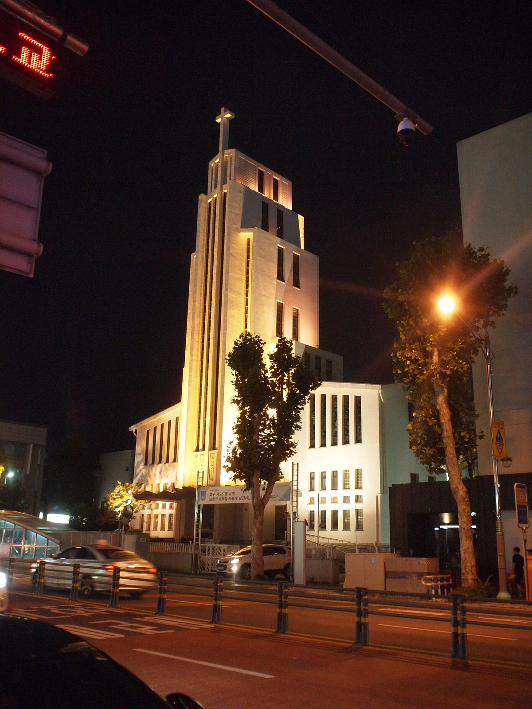

천주교 교구 에너지 전환 제각각…대전교구 신자 출자 햇빛협동조합, 조합원 2,982명·성당 발전소 42기 3,250kW

15개 교구 질의 결과 수원교구 자가발전은 목표 22MW의 약 12%, 대전교구는 탄소중립 본당 인증제 운영…교구별 실적을 같은 기준으로 모으는 한국교회 공통 집계 체계는 확인 안 돼
한국 천주교 교구들이 탄소중립 목표와 성당 태양광을 저마다의 방식으로 늘리고 있지만, 이를 같은 기준으로 모아 정기적으로 살피는 한국교회 차원의 집계 체계는 아직 없는 것으로 나타났다. 군종교구를 뺀 전국 15개 교구와 주교회의 생태환경위원회에 대한 질의에서 가장 두드러진 곳은 대전교구로, 신자들이 출자한 불휘햇빛발전협동조합이 2019년 갈마동 성당 1호기를 시작으로 성당과 교회 시설 지붕에 발전소를 지어 2026년 9월 말 현재 조합원 2,982명, 출자금 약 48억 원, 완공 발전소 42기 약 3,250kW에 이르렀고 10월 현재 16기 약 1,380kW를 더 짓고 있다. 조합이 건설비와 유지관리를 맡아 본당은 초기 투자와 관리 부담을 덜고, 교구는 본당 전력을 모두 재생에너지로 바꾼 'LUNA'(4곳)와 전기·가스·석유·물 사용의 순배출 0을 이룬 'SOL'(3곳)로 나눈 탄소중립 인증제를 운영한다. 2021년 2030년까지 교구·본당 전력을 모두 친환경에너지로 바꾸겠다고 선언한 수원교구는 필요한 설비를 약 22MW로 잡았으나 2026년 10월 현재 자가발전 설비는 70기 약 2,690kW로 목표의 약 12%이며, 이와 별도로 공동의집에너지협동조합이 상업용 200kW를 운영하고 400kW를 짓고 있다. 서울대교구는 2026년 4월 기준 교구 소유 건물 25곳에 태양광을 달았고, 춘천교구는 확인된 태양광이 약 89kW로 본당의 컨설팅 신청이 적어 공동체의 관심을 모으는 일을 가장 큰 어려움으로 꼽았다. 2025년 11월 주교회의 생태환경위원회와 재생에너지 보급 협약을 맺은 한국에너지공단은 정부 지원사업으로 천주교 시설 태양광 227건, 총 5,090kW가 조사됐다면서도 진행 중인 사업이 있어 수치가 바뀔 수 있고 천주교 쪽에서 전국 시설 목록이나 전력 사용량 자료를 받은 적은 없다고 밝혔다.
시민에너지 관점
신자 2,982명이 약 48억 원을 모아 성당 지붕에 42기 약 3,250kW를 세웠다는 것은, 종교 공동체의 지붕이 교구 예산이 아니라 신자들이 주인인 발전소로 채워질 수 있음을 보여 준다. 본당이 발전 사업까지 감당할 수 있느냐는 우려가 나올 수 있지만, 이 조합은 건설과 유지관리를 조합이 맡아 본당의 짐을 덜었고, 이탈리아 크레모나 교구도 재생에너지공동체 재단 7곳을 하나로 묶어 지자체·본당 등 약 90개 기관이 참여하는 약 6,000kW 규모의 연결망을 꾸리고 있다. 신자와 이웃이 출자해 주인이 되면 전기 수익이 공동체 안에 머물고, 전환의 속도도 교구 재정이 아니라 참여하는 사람의 수만큼 빨라진다. 교구별 설비와 에너지 사용량을 같은 기준으로 모으는 일부터 시작해, 성당과 교회 시설 지붕을 시민 출자 발전소에 여는 길을 넓혀야 한다.
출처: 가톨릭뉴스 지금여기 2026-10-27 유형선 원문 보기
韓国カトリック教区のエネルギー転換はまちまち…大田教区の信者出資の太陽光協同組合、組合員2,982人・聖堂発電所42基3,250kW
15教区への質問で、水原教区の自家発電は目標22MWの約12%、大田教区は小教区の炭素中立認証制を運営…教区ごとの実績を同じ基準で集める韓国教会共通の集計体制は確認されず
韓国のカトリック教区はそれぞれのやり方で炭素中立の目標や聖堂の太陽光を増やしているが、これを同じ基準で集めて定期的に点検する韓国教会全体の集計体制はまだないことが分かった。軍宗教区を除く全国15教区と司教協議会の生態環境委員会への質問で最も目立ったのは大田（テジョン）教区で、信者が出資したプルフィ太陽光発電協同組合が2019年のカルマ洞聖堂の1号機を皮切りに聖堂や教会施設の屋根に発電所を建て、2026年9月末時点で組合員2,982人、出資金約48億ウォン、完成した発電所42基・約3,250kWに達し、10月現在さらに16基・約1,380kWを建設している。組合が建設費と維持管理を担うことで小教区は初期投資と管理の負担を減らせ、教区は小教区の電力をすべて再生可能エネルギーに切り替えた「LUNA」（4カ所）と、電気・ガス・石油・水の使用で正味排出ゼロを達成した「SOL」（3カ所）に分けた炭素中立認証制を運営している。2021年に2030年までに教区・小教区の電力をすべて環境に優しいエネルギーに切り替えると宣言した水原（スウォン）教区は、必要な設備を約22MWと見積もったが、2026年10月現在の自家発電設備は70基・約2,690kWで目標の約12%にとどまり、これとは別に共同の家エネルギー協同組合が商業用200kWを運営し、400kWを建設中だ。ソウル大教区は2026年4月時点で教区所有の建物25カ所に太陽光を設置し、春川（チュンチョン）教区は確認された太陽光が約89kWで、小教区からのコンサルティング申請が少なく共同体の関心を集めることが最大の課題だと答えた。2025年11月に司教協議会の生態環境委員会と再生可能エネルギー普及の協定を結んだ韓国エネルギー公団は、政府支援事業でカトリック施設の太陽光227件・計5,090kWが調査されたとしつつ、進行中の事業があり数値は変わりうること、カトリック側から全国の施設リストや電力使用量の資料を受け取ったことはないことを明らかにした。
市民エネルギーの視点
信者2,982人が約48億ウォンを集めて聖堂の屋根に42基・約3,250kWを建てたことは、宗教共同体の屋根が教区の予算ではなく、信者自身が主人となる発電所で埋められることを示している。小教区が発電事業まで担えるのかという懸念もありうるが、この組合は建設と維持管理を組合が引き受けて小教区の負担を軽くしており、イタリアのクレモナ教区も再生可能エネルギー共同体の財団7つを一つにまとめ、自治体や小教区など約90の機関が参加する約6,000kW規模のネットワークを築いている。信者と隣人が出資して主人になれば、電気の収益は共同体の中にとどまり、転換の速さも教区の財政ではなく参加する人の数に応じて増す。教区ごとの設備とエネルギー使用量を同じ基準で集めることから始め、聖堂や教会施設の屋根を市民出資の発電所に開く道を広げるべきだ。
出典: カトリックニュース・今ここ（Catholic News Jigeumyeogi） 2026-10-27 ユ・ヒョンソン 原文を読む
韩国天主教各教区能源转型进度不一…大田教区信徒出资的阳光发电合作社社员2,982人、教堂发电站42座3,250kW
对15个教区的问询显示，水原教区自用发电仅达22MW目标的约12%，大田教区实行堂区碳中和认证制…尚未发现以统一标准汇总各教区数据的韩国教会共同统计体系
韩国天主教各教区正以各自的方式推进碳中和目标、增加教堂太阳能设施，但目前还没有一套以统一标准汇总并定期检查这些数据的韩国教会整体统计体系。在对除军宗教区以外的全国15个教区及主教团生态环境委员会的问询中，最突出的是大田教区：由信徒出资的Bulhwi阳光发电合作社从2019年Galma洞圣堂1号站起步，在教堂和教会设施屋顶建设发电站，截至2026年9月底拥有社员2,982人、出资金约48亿韩元，已建成发电站42座、约3,250kW，10月起另有16座、约1,380kW正在建设。由合作社承担建设费和运维，堂区得以减轻初期投资和管理负担；教区还实行碳中和认证制，分为堂区用电全部改用可再生能源的“LUNA”（4处）和电、气、油、水使用实现净零排放的“SOL”（3处）。水原教区2021年宣布到2030年教区和堂区用电全部改用环保能源，并将所需设备估算为约22MW，但截至2026年10月自用发电设备为70座、约2,690kW，仅为目标的约12%；此外，共同之家能源合作社另运营商业发电200kW，在建400kW。首尔总教区截至2026年4月已在教区所属的25处建筑安装太阳能；春川教区已确认的太阳能约为89kW，并表示由于堂区申请咨询的不多，凝聚共同体的关注是最大难题。2025年11月与主教团生态环境委员会签订可再生能源推广协议的韩国能源公团表示，通过政府支持项目共调查到天主教设施太阳能227件、合计5,090kW，但部分项目仍在进行，数字可能变化，而且从未从天主教方面收到全国设施名单或用电量等基础资料。
市民能源视角
2,982名信徒筹集约48亿韩元，在教堂屋顶建起42座、约3,250kW的发电站，说明宗教共同体的屋顶可以不靠教区预算，而由信徒自己当主人的发电站来填满。有人可能担心堂区能否承担发电业务，但这家合作社把建设和运维都揽了下来，减轻了堂区负担；意大利克雷莫纳教区也把7家可再生能源社区基金会联成一体，组建了由地方政府、堂区等约90个机构参与、规模约6,000kW的网络。信徒和邻居出资成为主人，电力收益就会留在共同体内部，转型速度也取决于参与的人数而非教区财政。应当先从以统一标准汇总各教区设备和能源使用量做起，拓宽把教堂和教会设施屋顶开放给市民出资发电站的道路。
来源: 《Catholic News Jigeumyeogi》 2026-10-27 Yu Hyeong-seon 查看原文
Korean Catholic dioceses move unevenly on energy transition; Daejeon's parishioner-funded solar co-op reaches 2,982 members and 42 church plants totalling 3,250 kW
Queries to 15 dioceses show Suwon's self-generation at about 12% of its 22 MW target and Daejeon running a carbon-neutral parish certification, but no common system for compiling diocesan data on the same basis was found
Korea's Catholic dioceses are expanding carbon-neutral targets and church solar each in their own way, but there is still no church-wide system for compiling these efforts on a common basis and reviewing them regularly. In queries to the country's 15 dioceses, excluding the Military Ordinariate, and to the bishops' conference's ecology and environment committee, the Diocese of Daejeon stood out: the Bulhwi Solar Power Cooperative, funded by parishioners, has built plants on the roofs of churches and church facilities since its first unit at Galma-dong Church in 2019, and as of the end of September 2026 had 2,982 members, about 4.8 billion won in member capital and 42 completed plants totalling about 3,250 kW, with 16 more plants of about 1,380 kW under construction in October. Because the co-op covers construction and maintenance, parishes avoid upfront investment and upkeep, and the diocese runs a carbon-neutral certification with two levels, "LUNA" for parishes using 100% renewable electricity (four) and "SOL" for net-zero emissions from electricity, gas, oil and water use (three). The Diocese of Suwon, which pledged in 2021 to switch all diocesan and parish electricity to clean energy by 2030, estimated it needs about 22 MW, but as of October 2026 its self-generation stands at 70 installations of about 2,690 kW, roughly 12% of the target, while the separate Common Home Energy Cooperative runs 200 kW of commercial generation and is building 400 kW more. The Archdiocese of Seoul had solar on 25 diocese-owned buildings as of April 2026, and the Diocese of Chuncheon, with about 89 kW of confirmed solar, said few parishes apply for consulting and that drawing the community's interest is its biggest challenge. The Korea Energy Agency, which signed a renewable energy agreement with the bishops' ecology committee in November 2025, said 227 solar installations totalling 5,090 kW at Catholic facilities had been identified through government support programmes, but noted that the figure may change as some projects are still under way and that it has never received a national list of church facilities or electricity-use data from the Church.
Citizen Energy View
That 2,982 parishioners pooled about 4.8 billion won to put 42 plants of about 3,250 kW on church roofs shows that the roofs of a faith community can be filled not from a diocesan budget but by power plants the faithful own themselves. Some may doubt whether parishes can take on a power business, but this co-op handles construction and maintenance itself to lighten their load, and in Italy the Diocese of Cremona has linked seven renewable energy community foundations into a single network of about 6,000 kW involving some 90 bodies including municipalities and parishes. When parishioners and neighbours invest and become owners, electricity income stays inside the community, and the pace of transition depends on how many people take part rather than on diocesan finances. The first step should be compiling each diocese's installations and energy use on a common basis, followed by wider access for citizen-funded power plants to the roofs of churches and church buildings.
Source: Catholic News Jigeumyeogi 2026-10-27 Yu Hyeong-seon Read the original